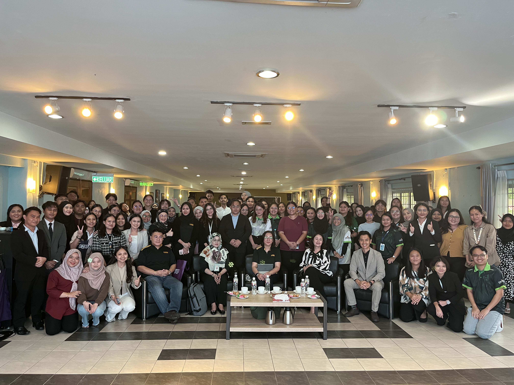
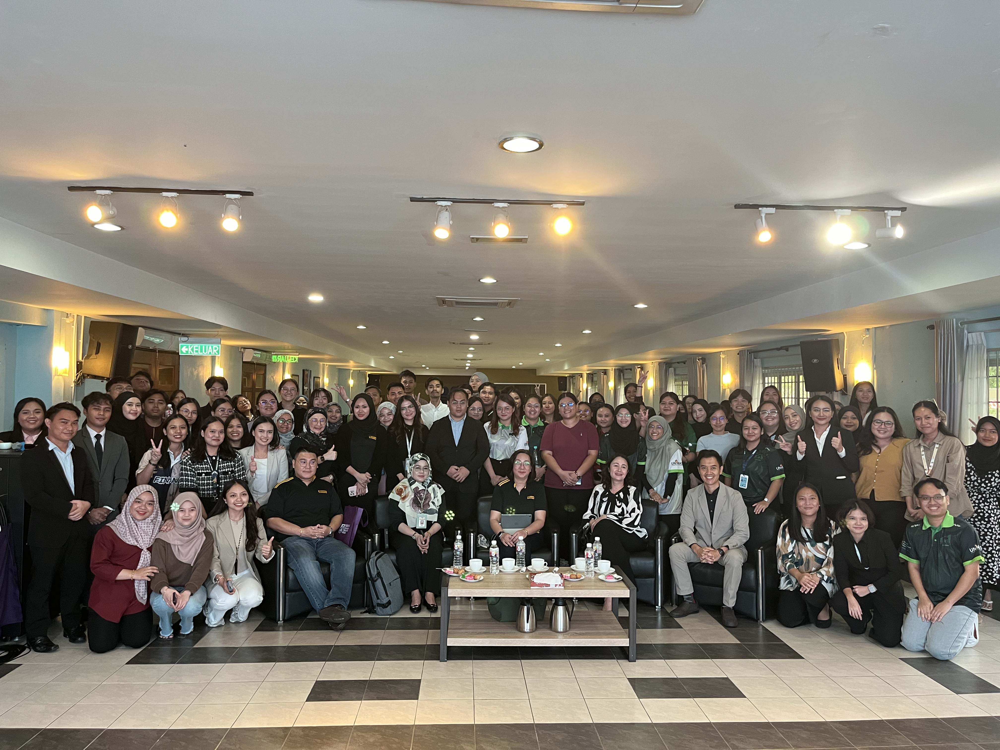

BAFIN Association
 
- became a committee of Bachelor of Finance (BAFIN) Association and gained opportunities to handle events such as Semester General Meeting, Team Building and Financial Literacy Talk.
D'BANKERS Club
- became one of the committees in D'Bankers Club and held position as EXCO of Public Relations.